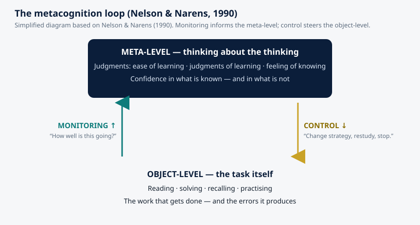

Article 48 · Cognition.X · AGI Future Foundation
The Mind Watching Itself: Metacognition in Humans and in Machines
This article is about metacognition — thinking about thinking — and it is the second article in the Foundation’s Cognition.X series.
Cognition.X · Intelligence & Mind · AGI Future Foundation
Illustration (generated image): a mind reflecting on itself. Not a photograph, not a picture of a real person, and not a screenshot of any system.
What is true, and what is not yet true
This article is about metacognition — thinking about thinking — and it is the second article in the Foundation’s Cognition.X series. The first article, Cognition.X: Learning, Understanding, and the Flow Zone, introduced the series itself: its stated direction in Flow Zone education, its anchored metaverse campus at 45.483, 18.572, and the fact that almost everything about it is still planned rather than built. This article does not repeat that ground. It goes one level deeper into the science the series is named for, and it asks a question the first article left open: what does it actually mean for a mind — a human one, or a machine one — to know what it knows?
Here is what is true. Metacognition is a real, heavily studied part of cognitive science. It has a fifty-year research literature, named founders, replicable experiments, and practical consequences for how people learn. The findings in this article come from that literature, and every source cited at the end is a real paper, book, or page that was actually read while writing it.
Here is what is not yet true. Cognition.X has no verified team, curriculum, learner, or product, and this article does not invent one. Nothing in the research below proves that any particular learning system works, and nothing in it describes a system the Foundation has built. The research is the reason the series is worth attempting; it is not evidence that the attempt has succeeded. The last section of this article is explicit about what would have to exist before Cognition.X could honestly claim to teach metacognition to anyone.
That distinction — between a science that is real and a series that is still a plan — is the whole discipline of this article, and it is also, as it happens, the subject of the article. Metacognition is the ability to tell the difference between knowing something and merely feeling as if you know it. A series built on learning science should be held to exactly that standard.
1. The moment you notice you don’t know
Everyone has had the experience this article is about, and almost nobody has a name for it when it happens. You read a paragraph, reach the bottom, and realise you absorbed none of it. You answer a question with total confidence and then, halfway through the sentence, hear yourself go wrong. You sit down to study, open the book, and choose the chapter you already half-know, because it feels productive, while the chapter you actually need stays closed. Or the opposite: you are stuck on a problem, you step away, and while you are doing something else you suddenly know which part you misunderstood.
Each of those moments is a small act of self-observation. Something in you was watching the thinking itself — tracking whether it was working, judging whether the understanding was real, and deciding what to do next. That watcher is metacognition.
The psychologist John H. Flavell gave the phenomenon its name. Flavell coined the term “metacognition” in 1976, and in a 1979 paper in American Psychologist he defined it as knowledge and cognition about cognitive phenomena — in plainer language, thinking about your own thinking. His examples are deliberately ordinary: a person is engaging in metacognition if they notice they are having more trouble learning A than B, or if it strikes them that they should double-check C before accepting it as fact. Metacognition is not a rare talent or a meditation technique. It is the everyday machinery by which a mind keeps track of itself.
Flavell divided metacognitive knowledge into three kinds, and the division still structures the field. There is knowledge about yourself as a thinker — that you remember faces better than names, say, or that you lose focus after forty minutes. There is knowledge about tasks — that some problems are harder than they look, that some texts demand slow reading. And there is knowledge about strategies — that re-reading feels useful but often is not, that testing yourself works better than highlighting, that explaining something aloud exposes gaps that silent reading hides. A learner who knows all three kinds is not necessarily smarter. They are better equipped, because they can choose what to do next on the basis of evidence about their own mind rather than on the basis of a feeling.
That last phrase matters, because the feeling is often wrong. Much of metacognition research is, in the end, a long documentation of how unreliable the feeling of knowing can be — and of how trainable the judgment behind it is.
2. Two halves: knowing and steering
The cleanest map of metacognition comes from Thomas O. Nelson and Louis Narens, who in 1990 proposed a framework that the field still uses. Their idea is simple enough to draw, and the diagram below does draw it.

Diagram (simplified illustration based on Nelson & Narens, 1990): monitoring flows up from the task to the meta-level; control flows down from the meta-level to the task.
Nelson and Narens split the mind into two levels. The object-level is the thinking itself: reading the page, solving the equation, trying to recall the name. The meta-level is a model of that thinking: a running estimate of how well it is going. Two streams of information connect them. Monitoring flows upward: the meta-level receives information about the state of the object-level — how fluent the reading felt, whether the answer came quickly, whether the memory resisted retrieval. Control flows downward: the meta-level uses that information to steer — to keep going, to slow down, to switch strategy, to restudy, to stop.
The loop is the whole story in miniature. When it works, a learner notices confusion early and does something about it. When it breaks, the two halves come apart, and each kind of break has its own signature failure. A monitoring failure means the meta-level is misinformed: the learner feels certain and is wrong, or feels lost and is actually nearly there. A control failure means the meta-level is informed but ignored: the learner knows they do not understand, and reads on anyway. Both failures are common, both are measurable, and both can be improved — but they are improved by different means, which is why the distinction matters for anyone designing a learning tool. A system that only gives a learner more information is treating a monitoring problem. A system that only gives a learner more discipline is treating a control problem. Most real learners have some of each, and a tool that cannot tell them apart will fix the wrong one.
The framework also explains why metacognition is not the same as intelligence. Intelligence, roughly, is what the object-level can do. Metacognition is how well the meta-level tracks and steers it. A person can be quick at solving problems and terrible at judging whether their solutions are right. A person can be slow and careful and excellent at knowing exactly where they stand. The two capacities correlate — a 2018 meta-analysis by Ohtani and Hisasaka, covering 118 articles, found that metacognition predicts academic performance even after intelligence is taken into account — but they are not the same thing, and they do not always travel together. That separation is good news for education, because it means the steering can be taught even when the engine cannot easily be made faster.
3. The judgments we make about our own minds
Monitoring is not one judgment. It is a family of them, and Nelson and Narens gave the three most important ones names that are still in use.
Ease-of-learning judgments come before study begins. They are predictions about what will be easy or hard to learn, and they guide the most basic decision a learner makes: where to start, and how much time to budget. They are largely inferential — based on a glance at the material, on familiarity, on how the topic felt last time — and they are often wrong in a particular direction: things that look familiar feel easy, and familiarity is a poor guide to whether something is actually learned.
Judgments of learning happen during or just after study. They are predictions about future test performance: will I remember this tomorrow? These are the judgments students rely on when they decide they have studied enough, and they are the judgments most distorted by fluency. Material that was easy to process — a clear lecture, a well-designed page, a passage read twice — feels learned. The feeling is real. The learning often is not. This is the mechanism behind one of the most robust findings in the learning literature: students who re-read a text report high confidence and then perform poorly, while students who test themselves report lower confidence during practice and then perform better. The judgment of learning tracked fluency, not durability.
Feeling-of-knowing judgments happen when recall fails. You cannot produce the answer, but you feel you would recognise it if you saw it — the tip-of-the-tongue state. Feeling-of-knowing judgments are surprisingly accurate, on average, and they serve a real function: they tell you whether to keep searching memory or to look the answer up. But they, too, can be misled, most famously by the familiarity of a wrong answer. Nelson and Narens documented cases in which people reported a stronger feeling of knowing for items they had previously answered incorrectly than for items they had simply left blank — the wrong answer, having been produced, felt like knowledge.
These three judgments are the instruments on the dashboard. Calibration is the word for how well the instruments read: a well-calibrated learner’s confidence matches their accuracy — 80 per cent confident means right about 80 per cent of the time. Poor calibration takes two familiar forms. Overconfidence is the common one, and it has a famous name. In 1999, Kruger and Dunning reported that people who performed worst on tests of logic, grammar, and humour were also the most overconfident about their performance — not because they were arrogant, but because the same missing skill that made them perform badly also made them unable to recognise that they were performing badly. The effect has been debated, qualified, and partly reframed since, but its core observation has held up across many studies: incompetence can hide itself from the person who has it, because the instrument that would detect it is the very instrument that is broken. Underconfidence is the quieter failure, and it is common among careful learners and beginners in a new domain: people who know more than they think, and who therefore restudy what they already know and avoid the harder material they are actually ready for.
Both miscalibrations are expensive. Overconfidence wastes the opportunity to correct an error. Underconfidence wastes time and courage. And both are, in principle, fixable — not by telling people to “be more confident” or “be more humble”, which does nothing, but by giving the meta-level better data: practice tests with feedback, worked examples that expose the gap between recognising a solution and producing one, and tasks that separate familiarity from mastery. That is the practical heart of this article, and it is where the science turns into design.
4. Why metacognition predicts learning
It is one thing to say that good learners monitor themselves well. It is another to show that the monitoring itself is doing causal work, rather than merely accompanying ability. The evidence that it does is now substantial, and it comes in three forms.
First, the correlational evidence is large and consistent. Ohtani and Hisasaka’s 2018 meta-analysis, published in the journal Metacognition and Learning, pooled 118 articles and found that metacognition was reliably associated with academic performance — and, importantly, that the association held even when intelligence was statistically controlled. In other words, among students of similar measured ability, the ones with better metacognition did better at school. The effect was not enormous, and it varied by subject and by how metacognition was measured, but it was real and it survived the obvious objection. A similar pattern appears in the literature on self-regulated learning, where the students who plan, monitor, and adjust their studying outperform students who simply put in the hours.
Second, the experimental evidence shows that the link runs in the direction the theory predicts. When researchers manipulate monitoring — for example, by giving students practice tests with feedback, or by asking them to predict their performance before seeing the answers — the students who receive accurate feedback about their own accuracy improve their subsequent study choices. They stop restudying what they already know. They allocate more time to the material they judged, correctly, that they had not yet learned. Dunlosky, Serra, and Baker reviewed this literature in 2007 and concluded that metamemory research had direct, usable implications for applied settings — a rare compliment from laboratory psychologists, who are usually the first to warn that lab findings do not travel.
Third, the developmental evidence shows that metacognition is not fixed. Children get better at monitoring as they grow, but the growth is slow, uneven, and heavily dependent on experience and instruction. Younger children are often strikingly overconfident; their judgments of learning track how much they liked a task, or how quickly they finished it, more than how well they actually learned it. With age and with feedback, the judgments sharpen. But the sharpening is not automatic. Research from developmental psychologists, including longitudinal work on children’s monitoring and control, finds that metacognition does not simply mature on its own — it needs opportunities to be practised, and it needs feedback that is honest enough to be useful. That is an important fact for any education project: the capacity is teachable, but only if the teaching is designed around the capacity rather than around the content alone.
There is also a limit worth stating plainly. Metacognition helps most when the learner has something to monitor. A student with no prior knowledge of a subject cannot generate useful judgments about it, because there is nothing for the meta-level to inspect — the object-level is silent. Elaborative strategies, self-explanation, and other metacognitive techniques all work best once a base of knowledge exists. This is one of the reasons the Dunlosky review rated practice testing and distributed practice as the most broadly effective techniques: they work across ages and materials, while the more reflective strategies need a foundation to reflect on. A learning system that asks a beginner to “reflect on your understanding” before the beginner understands anything is asking the meta-level to report on an empty room.
5. Can metacognition be taught?
If metacognition predicts learning, and if it is not fixed, the natural question is whether it can be taught directly — and the answer, carefully stated, is yes, but not by lecturing about it.
The interventions that work share a structure. They do not tell students that metacognition is important. They build the loop into the task itself. A student takes a practice test, predicts their score, sees the actual score, and is asked to explain the gap. A student explains a concept aloud, discovers mid-sentence that they cannot, and is given a targeted prompt rather than the answer. A student plans a study session, records what they actually did, and compares the plan with the outcome. In each case the meta-level is given something real to work with — a prediction, a failure, a discrepancy — and the feedback is immediate and specific enough to update the model.
The interventions that do not work also share a structure. They are generic. A poster on the wall that says “Think about your thinking” does nothing. A worksheet of reflection questions, completed after the learning is over and never revisited, does little. A system that asks a learner to rate their confidence but never shows them whether the confidence was warranted is worse than useless, because it trains the learner to produce a number without training the judgment behind it. The research is clear on this point: calibration improves when judgments are followed by feedback, and it does not improve when judgments are collected and ignored.
There is also a question of transfer that honest accounts must not dodge. Metacognitive skill learned in one domain does not automatically carry to another. A student who learns to monitor their reading comprehension does not automatically monitor their mathematics problem-solving. Some of the skill is general — the habit of pausing, predicting, and checking — but much of it is tied to the specific cues of a domain: what confusion feels like in algebra is different from what confusion feels like in a foreign language. Any learning system that claims to teach “metacognition” in the abstract, without anchoring it in a specific subject, is selling a slogan rather than a skill.
6. The machine version: what it means for an AI to know what it doesn’t know
So far this article has been about human minds. But Cognition.X is a series about learning in an age of agentic systems, and the same question now applies to machines — with a difference that matters enormously.
Large language models are, by most measures, extremely fluent and extremely poorly calibrated. They produce answers in the same confident tone whether they are right or wrong, and when asked to state their confidence numerically, the numbers they give are often far higher than their actual accuracy. This is not a minor quirk. In decision-making contexts — a student trusting a tutor, a clinician trusting a summary, a builder trusting a plan — unwarranted confidence is the failure mode that does the damage, because it is the failure mode that looks like success.
Recent research has begun to treat this as a metacognition problem rather than a knowledge problem, and the results are instructive. In a 2025 paper, Steyvers and colleagues at the University of California, Irvine investigated whether supervised fine-tuning could improve language models’ ability to communicate uncertainty. They tested two metacognitive tasks: single-question confidence estimation, where the model assigns a numeric certainty to its answer, and pairwise confidence comparison, where the model chooses which of two answers it is more likely to have right. Fine-tuning improved both calibration — the alignment between stated confidence and actual accuracy — and discrimination — assigning higher confidence to correct answers than to incorrect ones — and the improvements generalised across domains, including medical and legal reasoning. But the gains were task-specific: training on one form of metacognition did not transfer to the other, and only multitask fine-tuning produced broader improvements. The machine version of the transfer problem, it turns out, looks a lot like the human one.
A clinical study published in npj Gut and Liver makes the stakes concrete. Researchers evaluated 48 commercial and open-source language models on 300 board-style gastroenterology questions, asking each model to report its confidence on a 0–10 scale alongside its answer. Mean confidence ranged from 7.99 to 9.58 across models, while accuracy ranged from 30.3 per cent to 81.5 per cent. Every model was systematically overconfident. Even the best-performing model achieved only modest discrimination between its right and wrong answers — an area under the receiver operating characteristic curve of 0.626, well below the 0.7 threshold typically considered meaningful for clinical use. The models expressed high certainty regardless of whether their answers were right or wrong. In a clinical setting, that is not a performance gap. It is a safety problem.
Three cautions belong here, because this is where honest writing about AI most often goes wrong. First, machine “metacognition” is a metaphor, and a useful one, but it is not the same thing as human metacognition. A language model has no experience of knowing, no feeling of fluency, no meta-level in Nelson and Narens’ sense. What it has is a statistical signal — internal uncertainty that can be measured and, with training, communicated. Calling that signal “metacognition” is a convenient shorthand, and researchers use it, but the shorthand should never be allowed to smuggle in a claim about machine consciousness, self-awareness, or understanding. Second, calibration can be improved without accuracy improving at all. The Steyvers study is explicit about this: fine-tuning left accuracy unchanged while improving calibration. A better-calibrated model is not a smarter model. It is a more honest one — and honesty, in a tutor or an assistant, is a separate virtue from intelligence. Third, the overconfidence of current models is partly a product of how they are trained. Alignment training rewards confident-sounding answers, because human raters prefer them, and benchmarks reward confident guessing over calibrated uncertainty. The miscalibration is not an accident of the technology. It is, in part, a design choice, embedded in the reward structure — and design choices can be revisited.
That last point is the one that matters most for a learning series. If the systems that will tutor the next generation of learners are systematically overconfident, then the learners will inherit the miscalibration — they will trust confident errors, and they will never get the signal that would tell them to check. A learning environment that takes metacognition seriously has to solve the calibration problem twice: once in the learner, and once in the machine that teaches them. A tutor that cannot say “I am not sure” is a tutor that cannot teach a student to say it either.
7. What this would mean for Cognition.X — if it is ever built
Cognition.X is a proposed series, not an operating one, and this section is a list of design questions, not a product description. But the research above does say something specific about what a series in this domain would have to get right, and it is worth writing that down while the series is still a plan — because plans are the moment when getting it right is cheap.
First, a Cognition.X learning tool would need to measure calibration, not just correctness. A student who answers correctly with low confidence and a student who answers correctly with high confidence have learned different things, and a system that records only the score cannot tell them apart. The judgments of learning, the feeling-of-knowing reports, the confidence ratings — these are data, and a serious learning system would collect them, show them back to the learner, and track whether they improve over time. That is also a privacy question: confidence data is data about a person’s mind, and who can see it, how long it is kept, and whether a learner can delete it are governance questions for a human Steward Council, not features to be decided by default.
Second, the tool would need to give feedback on the judgment, not only on the answer. Telling a student they were wrong is useful. Telling them they were wrong and that they were 90 per cent confident is transformative, because it is the discrepancy that updates the meta-level. This is a small design decision with large consequences, and it is the difference between a quiz and a metacognitive instrument.
Third, the tool would need to be honest about its own calibration. If the system uses a language model to tutor, explain, or grade, then the model’s confidence must be communicated and its limits stated — in the interface, not in a footnote. A tutor that presents machine guesses as facts is teaching the opposite of metacognition. The Foundation’s own standard, stated on its site, is that agents prepare and humans decide; a tutoring agent that cannot express uncertainty is an agent that is not prepared to be checked.
Fourth, the series would need a first subject, not a general claim. Metacognition does not transfer cleanly across domains, so a series that promises to teach “thinking” in the abstract is promising something the research does not support. The honest version is narrower: pick one domain, one group of learners, and one measurable outcome — for example, calibration on practice tests in a single subject — and prove the loop works there before claiming anything broader.
None of those four things exists for Cognition.X today. There is no verified team, no Steward Council, no curriculum, and no learner. The campus at 45.483, 18.572 is an anchored fabric whose assets are not yet hosted, so it does not render fully. The research in this article is the reason the series is worth attempting. It is not a substitute for the attempt.
Frequently asked questions
Is metacognition the same as intelligence?
No. Intelligence is roughly what the object-level can do; metacognition is how well the meta-level tracks and steers it. The two correlate, and a 2018 meta-analysis found metacognition predicts academic performance even after intelligence is controlled, but they are separable — and the separable part is the teachable part.
Can you really teach someone to think about their thinking?
Within limits, yes. Interventions that build prediction, feedback, and reflection into the task itself improve monitoring and study choices. Generic advice — posters, reflection worksheets completed once and never revisited — does not. And the skill transfers poorly across domains unless it is deliberately practised in the new one.
Do machines have metacognition?
Not in the human sense. Language models have internal uncertainty signals, and recent research shows those signals can be trained to be communicated more honestly — but a model has no experience of knowing, and improved calibration does not mean improved accuracy. “Machine metacognition” is a useful metaphor for a real engineering problem: making systems report their uncertainty accurately. It is not a claim about machine consciousness.
Why does this matter for a learning series that does not exist yet?
Because the design decisions that determine whether a learning tool helps or harms are made early, and they are cheap to make well at the planning stage. Measuring calibration, feeding back on judgments, stating machine uncertainty, and starting with one domain are all decisions that cost little now and are expensive to retrofit later.
Glossary
- Metacognition — cognition about cognition; thinking about one’s own thinking. Term coined by John H. Flavell (1976).
- Meta-level / object-level — in Nelson & Narens (1990), the object-level is the thinking itself; the meta-level is the model of that thinking.
- Monitoring — the flow of information from the object-level to the meta-level; judging how well thinking is going.
- Control — the flow of decisions from the meta-level to the object-level; changing strategy, restudying, or stopping.
- Judgment of learning (JOL) — a prediction, during or after study, about future test performance.
- Feeling of knowing (FOK) — the sense, when recall fails, that the answer would be recognised if seen.
- Ease-of-learning (EOL) judgment — a prediction, before study, about what will be easy or hard to learn.
- Calibration — the alignment between confidence and accuracy; well-calibrated confidence matches actual performance.
- Cognition.X — W3 Series 1 in the April 2026 internal list; proposed, not formed, funded, or offered. Its published direction is Flow Zone education. Its anchored campus sits at 45.483, 18.572.
References
- Flavell, J. H. (1979). Metacognition and cognitive monitoring: A new area of cognitive–developmental inquiry. American Psychologist, 34(10), 906–911.
- Nelson, T. O., & Narens, L. (1990). Metamemory: A theoretical framework and new findings. In G. H. Bower (Ed.), The Psychology of Learning and Motivation (Vol. 26, pp. 125–173). Academic Press. Full chapter: https://sites.socsci.uci.edu/~lnarens/1994/Nelson%26Narens_Book%20Chapter_1994.pdf
- Dunlosky, J., Serra, M. J., & Baker, J. M. C. (2007). Metamemory. In F. T. Durso (Ed.), Handbook of Applied Cognition (2nd ed.). Wiley.
- Ohtani, K., & Hisasaka, T. (2018). Beyond intelligence: A meta-analytic review of the relationship among metacognition, intelligence, and academic performance. Metacognition and Learning, 13(2), 179–212.
- Kruger, J., & Dunning, D. (1999). Unskilled and unaware of it: How difficulties in recognizing one’s own incompetence lead to inflated self-assessments. Journal of Personality and Social Psychology, 77(6), 1121–1134.
- Steyvers, M., et al. (2025). Improving metacognition and uncertainty communication in language models. arXiv:2510.05126. https://arxiv.org/html/2510.05126v1
- Evaluation of 48 large language models’ self-reported confidence on gastroenterology board-style questions. npj Gut and Liver (2026). https://www.nature.com/articles/s44355-026-00053-3
- Metacognition — overview and definitions. https://en.wikipedia.org/wiki/meta-cognition
- AGI Future Foundation. Cognition.X (Article 01): Learning, Understanding, and the Flow Zone. https://www.agifuturefoundation.org/articles/article-01-cognition-x.html
- AGI Future Foundation. Cognition.X series page (S01). https://www.agifuturefoundation.org/series/S01-cognition-x.html
- AGI Future Foundation. Intelligence & Mind — article category. https://www.agifuturefoundation.org/articles/category-1-intelligence-mind.html
AGI Future Foundation PBC — a California Nonprofit Public Benefit Corporation, Entity No. B20260196664, Articles filed 2026-04-24. No IRS 501(c)(3) determination letter is on file; donations are not claimed to be tax-deductible. Cognition.X is a proposed W3 series, not formed, funded, or offered. Nothing on this page is legal, tax, or financial advice. Questions: x@agifuturefoundation.org.